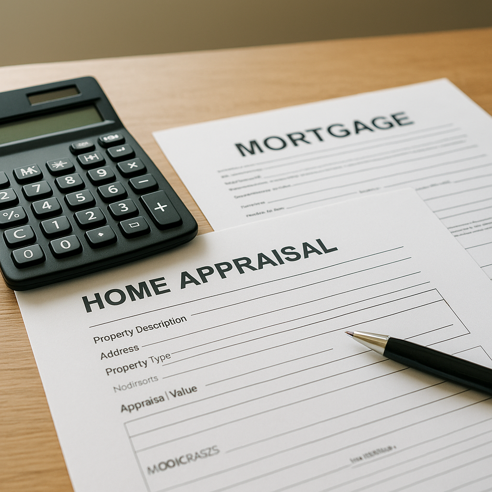

I'm Bond Peter Njoku, a mortgage loan officer based in Garland, and a low appraisal is the single most common reason a DFW deal stalls between contract and closing. In a normal market, appraisals land within 1–3% of the contract price. In October 2026 — after a run-up in prices followed by a softening market where nearly half of DFW closings now include a seller concession — I'm seeing more appraisals come in short, and I'm seeing buyers make expensive decisions in the 48 hours after the number lands.
There is no shortage of articles telling you to "negotiate with the seller" or "request a reconsideration of value." What almost none of them explain is what actually happens inside your loan file — and that is the part that determines how much cash you need and whether the deal is still worth doing. So let me show you the underwriting side.
What does the underwriter do when a DFW appraisal comes in low?
Your loan amount was never really based on your purchase price. It was based on a loan-to-value ratio applied to the lesser of the purchase price or the appraised value. As long as the appraisal meets or beats the contract price, that distinction is invisible. The moment it doesn't, the appraised value becomes the number that governs everything.
Here is the recalculation on a real DFW scenario — a $350,000 home in Garland with 5% down on a conventional loan:
| Appraisal at $350,000 | Appraisal at $335,000 | |
|---|---|---|
| Contract price | $350,000 | $350,000 |
| Appraised value | $350,000 | $335,000 |
| Max loan at 95% LTV | $332,500 | $318,250 |
| Your 5% down payment | $17,500 | $17,500 |
| Appraisal gap (extra cash) | $0 | $14,250 |
| Total cash to close (before closing costs) | $17,500 | $31,750 |
| Monthly principal & interest at 7.0% | $2,212 | $2,117 |
Read that table twice, because this is the point every other article skips: the gap is additive to your down payment, not a substitute for it. You still owe the full 5% of the contract price, and then you owe the $14,250 shortfall on top. A $15,000 appraisal miss nearly doubled this buyer's cash requirement — from $17,500 to $31,750.
Three things that do not happen, which buyers routinely fear: your loan is not denied, your interest rate does not change, and your credit is not affected. This is a collateral problem, not a borrower problem.
What are my four options after a low appraisal?
Every low appraisal resolves into one of four paths. The column that matters most is the last one — what it does to your cash.
| Option | How it works | Effect on your cash to close | When it's the right call in DFW |
|---|---|---|---|
| 1. Renegotiate to the appraised value | Seller drops the price to $335,000; an amendment is signed and the loan is re-disclosed | Falls to $16,750 — less than you originally planned, since 5% of a smaller price is a smaller down payment | Almost always your opening position in the current market, where DFW sellers are already cutting prices |
| 2. Split the difference | Seller comes down to $342,500; you cover the remaining $7,125 above the appraised value | Rises to roughly $24,250 | Competitive listing, motivated but firm seller, and you genuinely want the house |
| 3. Cover the full gap in cash | Price stays at $350,000; you bring the $14,250 shortfall yourself | Rises to $31,750 | Rarely — see my warning below. Defensible only for a truly irreplaceable property |
| 4. Terminate under the financing addendum | You deliver written notice inside your deadline and recover your earnest money | Falls to $0 (your option fee is generally not refundable) | Gap above roughly 4–5% of price, an unmotivated seller, or the appraisal exposed a real condition problem |
There is a fifth path worth knowing: a Reconsideration of Value, where your lender submits better comparable sales and asks the appraiser to revisit the number. It is worth attempting when you can supply genuinely superior comps — closed sales within about half a mile, inside the last 90 days, within 10% of the subject's square footage, that the appraiser clearly didn't use. Be realistic about the odds. An ROV succeeds when the appraiser missed data, not when you disagree with the conclusion, and it typically adds one to two weeks to your timeline.
Should I cover the appraisal gap in cash in October 2026?
Usually not, and I want to be direct about why, because this is where I part company with most of the advice online.
Covering the gap means paying $350,000 for a house that a licensed, independent appraiser — working for the lender, with no stake in the deal — just valued at $335,000. You are funding $14,250 of instant negative equity with cash that is gone the moment you close. In a market rising 8% a year, you grow out of that in about eighteen months. In the DFW market as it stands in October 2026, with inventory up, sellers cutting prices and concessions in roughly half of closings, you may be waiting considerably longer.
The leverage math also favors you right now. A seller who refuses to come down is betting that their next buyer appraises higher. If you're using FHA financing, that bet is much weaker than they realize — which brings me to the program differences.
How do FHA, VA and conventional loans handle a low appraisal differently?
| Feature | FHA | Conventional | VA |
|---|---|---|---|
| Appraisal validity period | 180 days (HUD ML 2022-11), extendable to 1 year with an update | 120 days, extendable to 12 months with an update | 6 months (Notice of Value) |
| Does the value follow the property? | Yes — it attaches to the FHA case number, not the lender | No — a new lender can order a new appraisal | Effectively yes within the NOV period |
| Advance warning of a low value | None | None | Yes — the Tidewater process |
| Reconsideration of Value available | Yes | Yes | Yes, plus a formal reconsideration through the VA |
| Built-in right to walk | Via the Texas financing addendum | Via the Texas financing addendum | Yes — the VA escape clause, in addition to the addendum |
| Who may pay the gap | Buyer only (it cannot be financed or gifted into the loan as value) | Buyer only | Buyer only |
| Second appraisal | Generally not permitted to chase a higher value | Allowed, buyer-paid, typically only with a lender change | Not permitted to chase value |
Two of these deserve more than a table cell.
The FHA case-number problem is your leverage. Because an FHA appraised value attaches to the case number rather than to me as the lender, a seller who lets your FHA deal die doesn't get a clean slate. The next FHA buyer inside that 180-day window is generally looking at the same $335,000. Listing agents who understand this advise their sellers to take the renegotiation. When I'm working an FHA file in this situation, I make sure that point reaches the other side.
VA buyers get a warning shot. Under the VA's Tidewater process, when an appraiser is heading toward a value below the contract price, they must notify the requesting party before finalizing the report — which creates a short window, generally two business days, to submit supporting comparable sales. It is the only program where you can intervene before the low number becomes official. On top of that, the VA escape clause guarantees a veteran buyer the right to walk away and recover their deposit if the property doesn't appraise for the contract price, independent of any contract contingency.
How does the Texas Third Party Financing Addendum protect me?
In DFW we use TREC's promulgated contract forms, and your appraisal protection lives in the Third Party Financing Addendum — not in the main contract body. Its appraisal provision gives you the right to terminate and receive your earnest money back if the property doesn't appraise for at least the sales price, provided you deliver written notice to the seller within the period the addendum specifies.
Three practical warnings. First, this provision can be waived, and in 2024–2025 bidding wars a great many DFW buyers waived it to win — check your own addendum before you assume you're protected. Second, the notice must be written and delivered on time; a phone call to your agent is not notice. Third, the appraisal deadline and your option period are two separate clocks that expire on different dates. I walk through both with every client the day the appraisal is ordered, not the day it comes back. I've written a fuller explanation in my guide to the Texas Third Party Financing Addendum, and my earnest money and option fee guide covers which deposits you can actually recover.
A real DFW example: a $350,000 Garland offer that appraised at $335,000
Earlier this year I worked with a couple buying their first home in Garland. They were approved at a 712 credit score, going conventional with 5% down, and they'd offered $350,000 — about $8,000 over list — because three other offers came in the first weekend. The appraisal came back at $335,000.
Their agent's first instinct was to ask them to cover the gap, and they very nearly did. I ran the numbers you see in the table above and showed them that the $14,250 shortfall would stack on top of their $17,500 down payment, pushing their cash to close past $31,750 once closing costs were added — roughly $4,000 more than they actually had after holding back a reserve.
We asked for the appraised value instead. The seller countered at $342,500, we held at $335,000, and because the home had been on the market 38 days and the listing agent understood that a new buyer could face the same appraisal, the seller accepted $336,000. My clients covered $1,000, their down payment dropped to $16,800, and their monthly principal and interest came in near $2,123 at 7.0% — plus Dallas County taxes at roughly 2.0% and insurance. They closed 21 days later, and they did it with less cash than they'd originally budgeted.
That outcome is available to most buyers in this market. It requires knowing the underwriting math well enough to stop a bad decision in the 48 hours when everyone is panicking.
What should I do in the first 48 hours after a low appraisal?
- Get the full report, not the number. Read the comparable sales the appraiser used, their dates, and every adjustment. This tells you whether an ROV has any chance.
- Have your lender rerun your cash to close. You cannot make this decision without the real figure. Ask for it in writing.
- Check both deadlines in your addendum — appraisal notice and option period — and calendar them the same day.
- Decide your walk-away number before you negotiate, not during. Mine for most DFW buyers sits around 4–5% of the purchase price.
- Open with the appraised value. It is a defensible, third-party-supported position, and in October 2026 it is frequently accepted.
If you want the payment math on any of these scenarios, my mortgage calculators will get you close, and my post on appraisal gap coverage in DFW covers the offer-writing side — how to structure gap language before you're in this situation. For the wider negotiating picture, see how to use seller concessions in this market. If you're buying in Garland specifically, my Garland mortgage page has local program details.
Frequently Asked Questions
What happens to my mortgage if the appraisal comes in lower than my offer in DFW?
I'm Bond Peter Njoku (NMLS #2670329), and the short version is that your lender caps the loan at the appraised value, not your contract price. If you offered $350,000 with 5% down, your loan was going to be $332,500 — but if the appraisal lands at $335,000, the most I can lend at that same 95% is $318,250. That $14,250 difference does not come out of your down payment; it stacks on top of it, so your cash to close goes from $17,500 to $31,750. Your loan is not denied and your rate does not change — the only question is who absorbs the gap. Call or text me at 469-545-7180 and I'll run your actual numbers before you respond to the seller.
Can I get my earnest money back after a low appraisal in Texas?
I'm Bond Peter Njoku (NMLS #2670329), and in most DFW contracts the answer is yes, if you act inside your deadlines. The Texas Third Party Financing Addendum contains an appraisal provision, and if you have not waived it, you can terminate and recover your earnest money by delivering written notice to the seller within the time stated in the addendum. The two things that cost buyers their earnest money are waiving that provision to win a bidding war, and missing the written-notice deadline. Your option fee is generally not refundable either way. Send me your addendum at 469-545-7180 and I'll tell you exactly which deadline governs your file.
Does a low appraisal mean I have to pay the difference in cash?
I'm Bond Peter Njoku (NMLS #2670329), and no — covering the gap in cash is only one of four options, and in the October 2026 DFW market it is usually the worst one. You can renegotiate the price down to the appraised value, split the difference with the seller, cover the gap yourself, or terminate under the financing addendum. With DFW sellers now cutting prices and nearly half of local closings including concessions, you have real leverage to renegotiate. Paying $14,000 in cash to buy a house for more than it just appraised for is a decision I talk buyers out of most weeks. Call or text me at 469-545-7180 before you agree to cover anything.
How long is an FHA appraisal good for, and does the low value follow the house?
I'm Bond Peter Njoku (NMLS #2670329), and an FHA appraisal is valid for 180 days from its effective date under HUD Mortgagee Letter 2022-11, extendable to a full year with an appraisal update. The part most buyers and sellers miss is that the FHA appraised value attaches to the FHA case number, not to the lender — so if your deal falls apart, the next FHA buyer who comes along inside that window is generally stuck with the same low number. That is genuine leverage for you as an FHA buyer, because the seller cannot simply wait for a friendlier appraisal from the next FHA offer. Conventional appraisals run 120 days and VA Notices of Value run six months. Call or text me at 469-545-7180 to talk through your program.
Worried your DFW appraisal might come in short?
I'm Bond Peter Njoku (NMLS #2670329). I underwrite to the appraised value every day, and I will show you the exact cash impact before you decide whether to renegotiate, cover the gap, or walk. Call or text me at 469-545-7180, message me on WhatsApp, or start your pre-approval online.